Imagery · AI abstracta · conexión humano–tecnología · 34 piezas
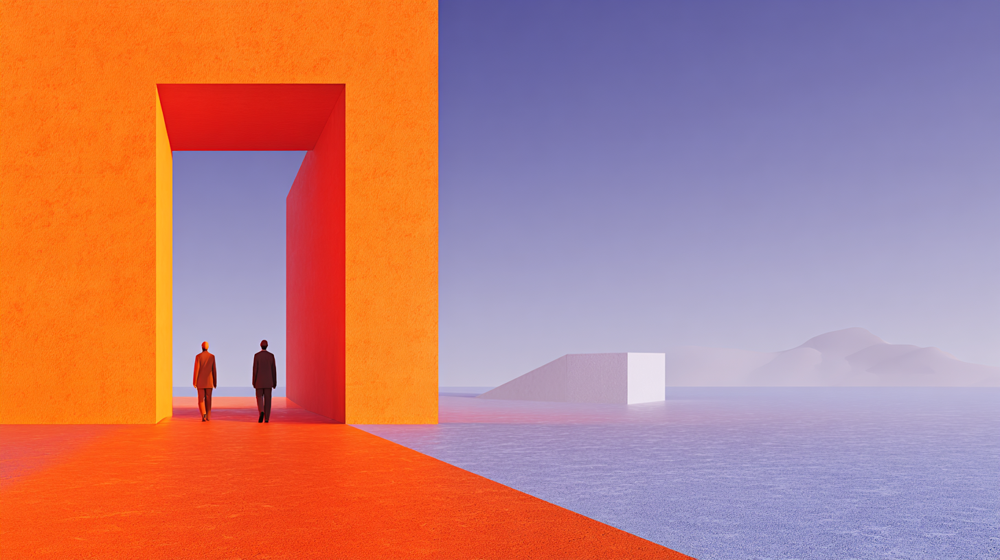
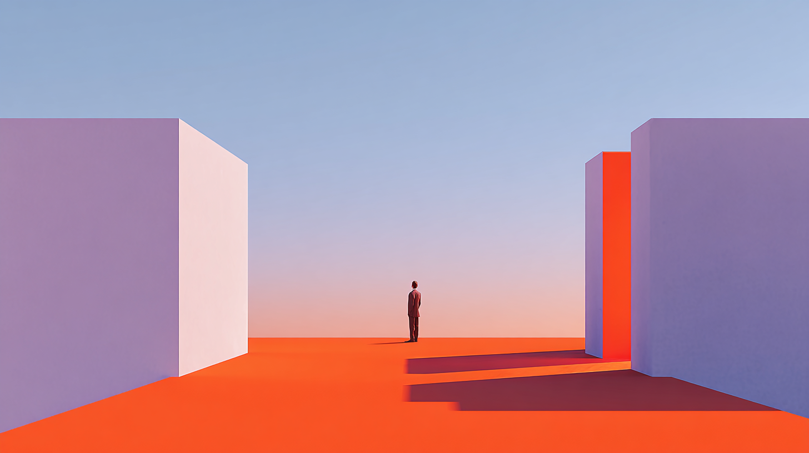
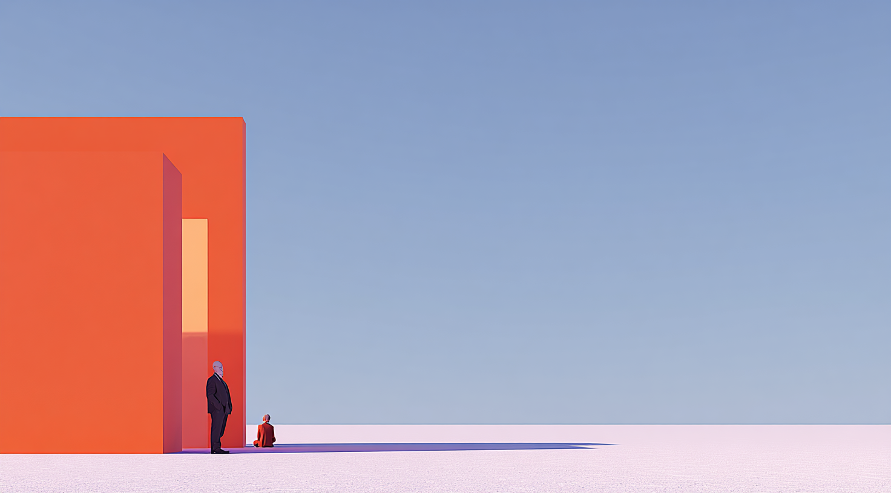

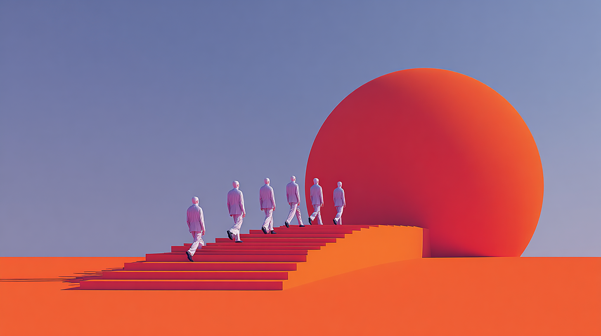
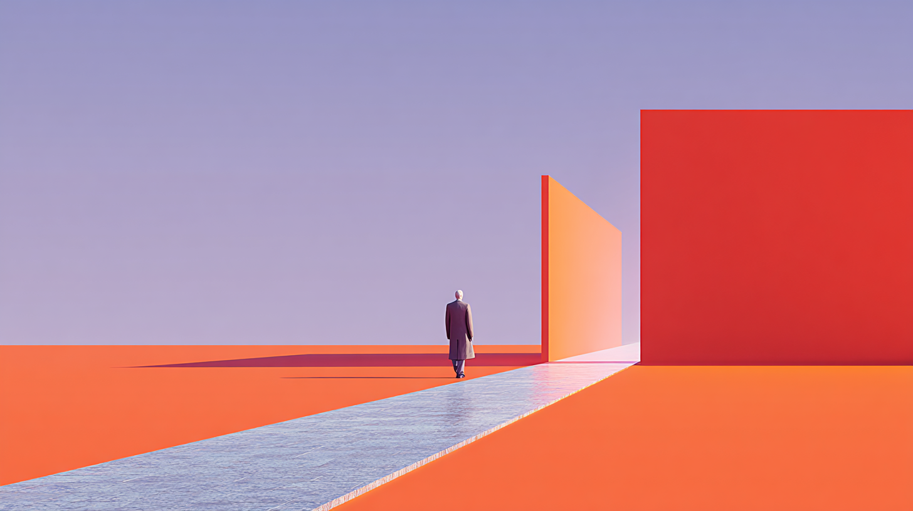


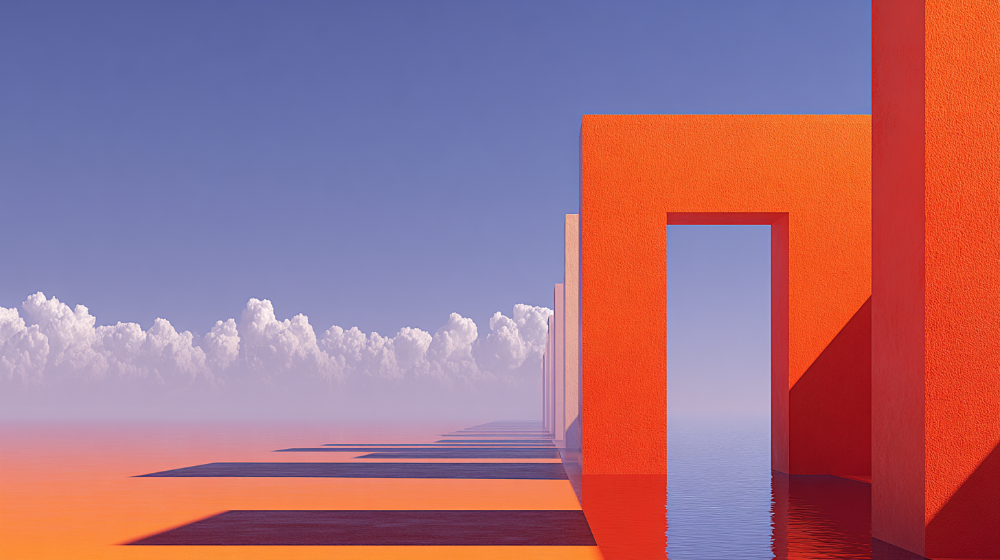
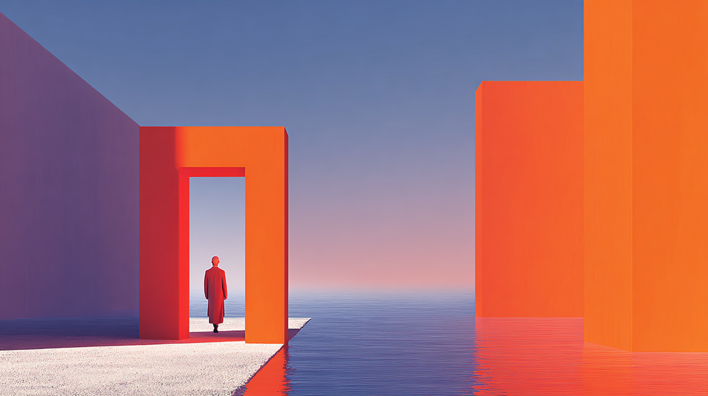
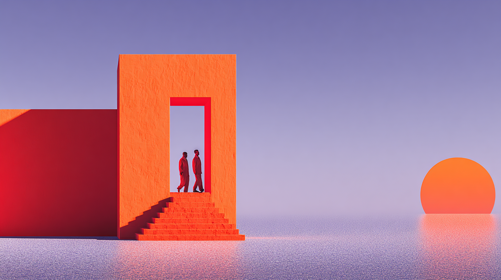
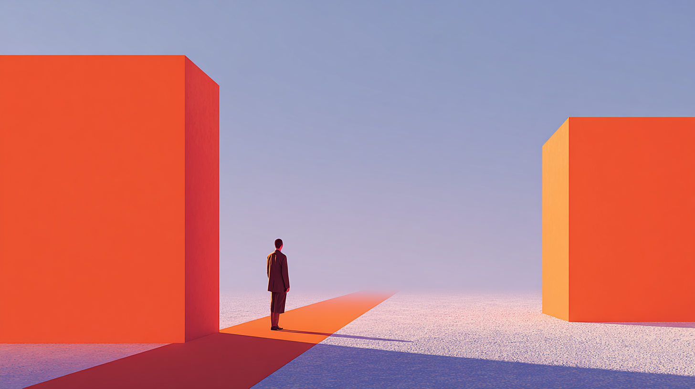
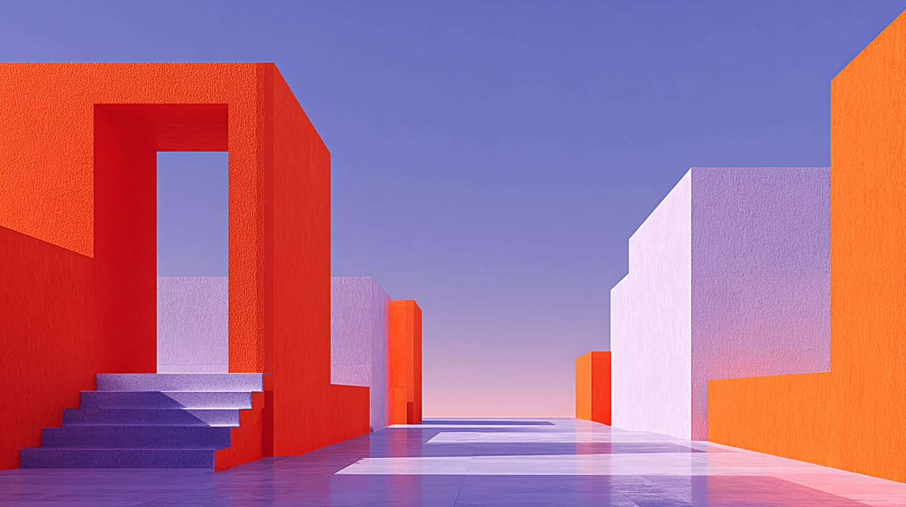
Paleta dominante
Naranja accent · violeta · azul lavanda · negro NLACE
Características del set
EstiloAbstracto 3D minimalista · render IA
TemáticaFigura humana · arquitectura geométrica · escala
FormatoHorizontal 16:9 · alta resolución
UsoPortadas · fondos de sección · hero slides
DiferenciadorDistinto de fotografía de equipo — no mezclar
ReglaUna sola imagen por pantalla · bordes rectos · sin márgenes
Uso sugerido · portada · hero · fondo de sección
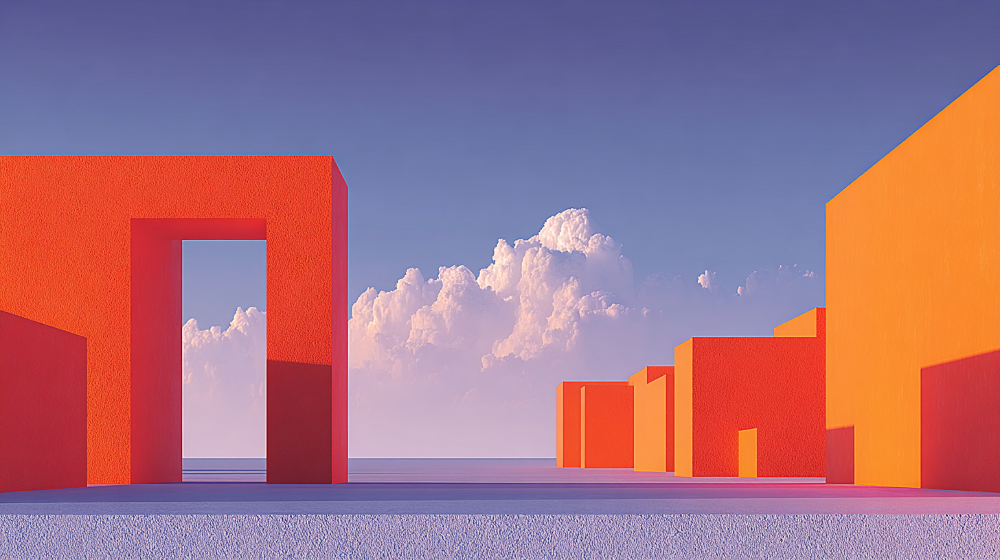
Portada Hero
Hero
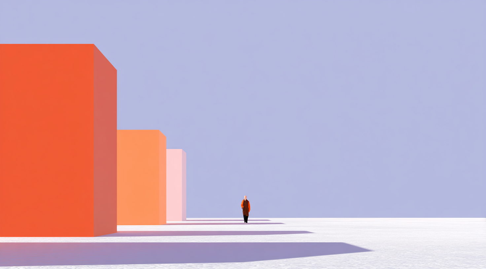
Secciónassets/imagery/ai-01.png → ai-34.png · generadas con IA · paleta NLACE